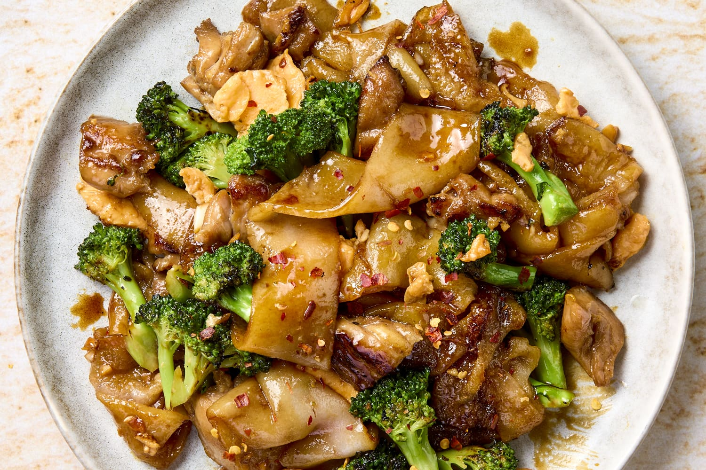

Padseew

Description
Basic recipes online will instruct you to use little more than just soy sauce
and sugar. It takes a little more than that!
Getting a little caramelisation on the noodles makes all the difference
between an “ok” and “wow, its JUST like you get at restaurants!”.
Remove the stir fry ingredients. Cook the noodles with sauce separately.
Less stuff in the wok (or skillet) = easier to caramelise the noodles.
At least, at home.
If you’ve got a giant restaurant wok burner,
you don’t need to do the noodles separately!
Ingredients
-
Noodles
-
Chinese Broccali
-
Chicken and Egg
-
Dark Soy Sauce
-
Ordinary or light soy sauce
-
Oyster Sauce
-
Vineger
-
Sugar
Steps
-
Using either a wok or large skillet set over high heat,
heat the oil then sauté the garlic until it goes light golden.
Add the chicken then once it mostly changes from pink to white,
add the Chinese broccoli stems which take longer to cook than the
leafy part. Once the chicken is cooked (it should only take 2 to 3
minutes), toss the Chinese broccoli leaves in and cook for 30 seconds
or so just until wilted.
-
Push everything to the side to make room to scramble the eggs on the
side. This is the traditional Thai way of scrambling eggs in Pad See Ew!
-
Crack egg straight into the wok.
-
Scramble egg – Then mix to scramble it. Speed is of the essence here –
we want scrambled egg not a sunny side up egg!
-
Remove the chicken and vegetables onto plate. As mentioned above,
the best way to cook Pad See Ew at home is to cook the noodles
separately so we can get some nice caramelisation on them.
If we don’t do this, then the noodles just stew instead of caramelising.
-
Add noodles and sauce into the wok.
-
Toss quickly for 1 to 1 1/2 minutes until the sauce is
dispersed throughout the noodles and you see some caramelisation
on the edges.
-
Once the noodles are caramelised, add the chicken and vegetables back in.
Give it a quick toss just to disperse, then serve!